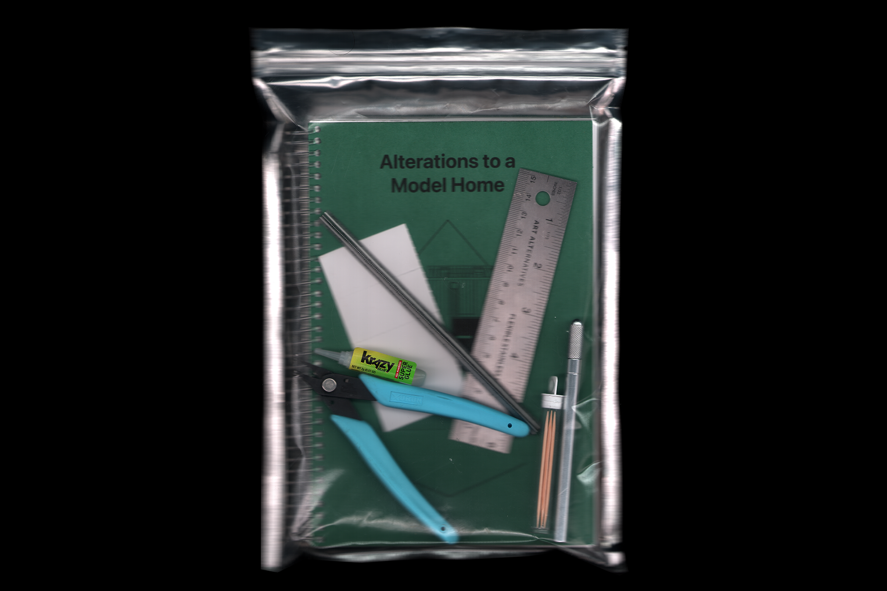
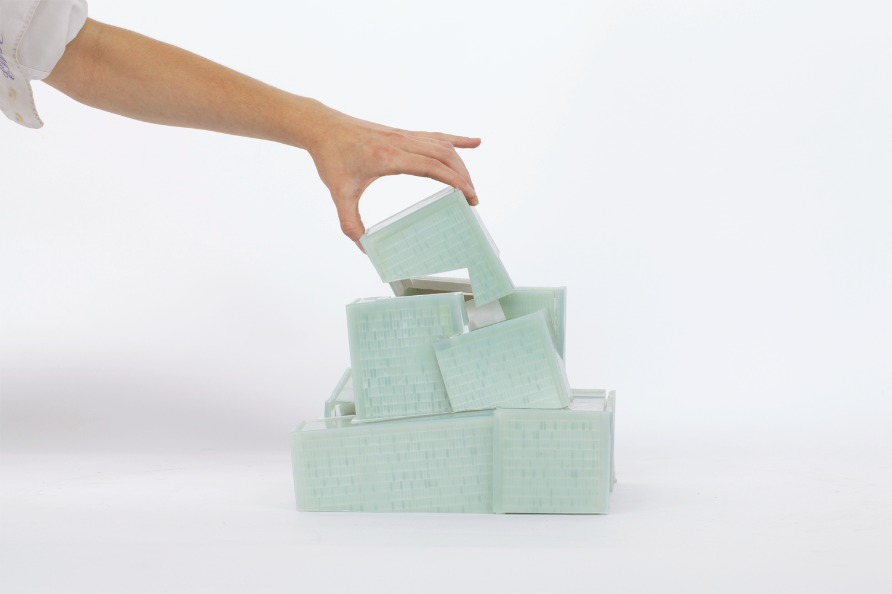
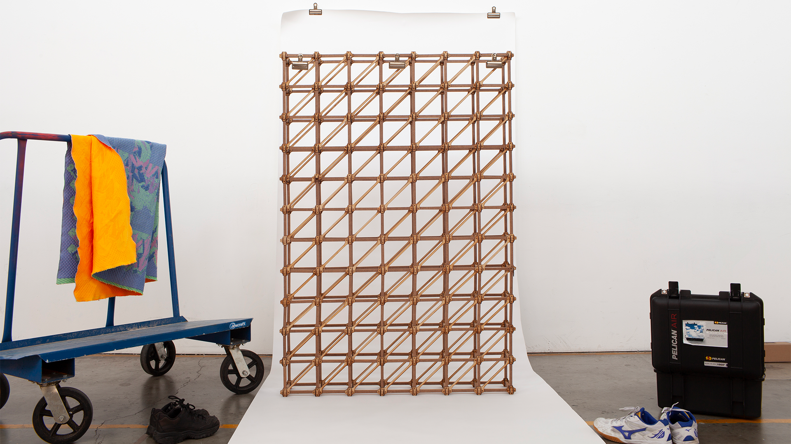

is a designer based in Los Angeles, California. [...]
In addition to working as a project designer, she writes for independent galleries and publications, focusing on profiling emerging artists. In 2025, Caroline launched "Soft" with Jack Belter, a publication featuring projects from early-career designers in the architectural discipline.
She received a Master of Architecture degree with distinction from Southern California Institute of Architecture and until 2025 continued to teach there. She also holds a curatorial degree from Central Saint Martins.

a conduit, a container, a spot of ink

Alterations to a Model Home

Ceremonial Procedures

Covering Up